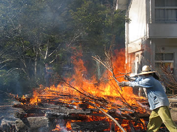
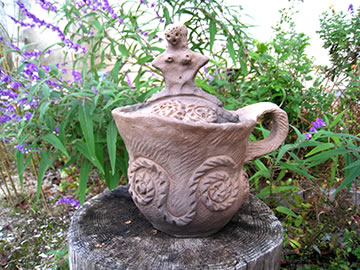

素晴らしい縄文野焼き日和！
前日の台風２４号なごりの強い風も収まり、１３日は素晴らしい秋晴れの朝を迎えました。
=∴=∵=∴=∵=∴=∵=∴=∵=∴=∵=∴=∵=∴=∵=∴=∵=∴=∵=∴=∵=∴=∵=∴=∵=∴=∵=∴=
《縄文野焼き》
今回野焼きしたのは合計164点。
親子のみなさんがつくった、新見市の思誠小学校第19支会の土器や土面作品。
こどもたちが挑戦した、井倉子ども土ひねり教室での縄文土偶や縄文ペッカリー。
また法曽焼同好会員の作品、個人参加の陶芸教室生の土器作品、猪風来や村上陶芸指導員の作品などです。
迫力のある大きな火焔土器や創作土偶。
縄文の文様が丁寧に美しく施された土器や、個性的な楽しい縄文ペッカリー。
火のそばに一堂に並べられた眺めは壮観です。
ゆっくりと火にあぶられ徐々に温められて、熱くなるごとに変化する土の肌。
作品に生命が息づいていくのがわかります。
スタッフは汗まみれ火まみれで木を積み、炎を大きな火竜になるまで育て上げる。
炎が真っ赤な姿で空にかけ上がるとき生命が誕生します。
地元の方々をはじめ、遠くは東京や神奈川・広島や県内各地より来てくださった多くの方々とともに、
縄文野焼き祭りの最高の場を囲むことができました。
|  | |
=∴=∵=∴=∵=∴=∵=∴=∵=∴=∵=∴=∵=∴=∵=∴=∵=∴=∵=∴=∵=∴=∵=∴=∵=∴=∵=∴=
《民族楽器と縄文野焼きの共演！》
広島と岡山から参加してくれた二人のミュージシャンが飛び入りで演奏してくださいました。
ディジュリドゥ（オーストラリアの先住民アボリジニの民族楽器）とジェンベ（アフリカン太鼓）です。
大地の鼓動に呼応するような原初の音が縄文野焼きのゆれる炎と絡み合い、独特の境地を醸し出しました。
ユニット「スプルーフですけん」のお二人、ありがとうございました！
=∴=∵=∴=∵=∴=∵=∴=∵=∴=∵=∴=∵=∴=∵=∴=∵=∴=∵=∴=∵=∴=∵=∴=∵=∴=∵=∴=
《縄文野焼き大賞》
焼き上がった作品の中から縄文野焼き大賞など４賞の選考と表彰が行なわれました。
（敬称略）
○縄文野焼き大賞
縄文土器 米本 久美子(よねもとくみこ) 岡山市
○縄文野焼き新見市教育長賞
縄文ペッカリー 原田 純奈(はらだじゅんな) 井倉子ども土ひねり教室
○縄文野焼き法曽焼同好会会長賞
縄文土面 加嶋 浩二(かしまこうじ) 思誠小学校第19支会
○縄文野焼き猪風来美術館館長賞
縄文土器 中島 秀和(なかじまひでかず) 神奈川県川崎市
受賞者のみなさんおめでとうございます。
また、今回受賞されなかった作品もみな素晴らしい作品ばかりです。
受賞作と小学生制作の作品は、１１月中館内に展示する予定です。
|  | |
| 【縄文野焼き大賞】縄文土器 | 【縄文野焼き新見市教育長賞】縄文ペッカリー |
| 【縄文野焼き法曽焼同好会会長賞】縄文土面 | 【縄文野焼き猪風来美術館館長賞】縄文土器 |
=∴=∵=∴=∵=∴=∵=∴=∵=∴=∵=∴=∵=∴=∵=∴=∵=∴=∵=∴=∵=∴=∵=∴=∵=∴=∵=∴=
《みんな縄文人！ 縄文体験コーナー》
～こんなに美味しい縄文土器料理～
土器２個でまめぶ汁（岩手の郷土料理）を作りました。
当日参加者のお手伝いもあり、土器のまわりで薪を燃やし熱した土器の中の汁は、上にクルミと黒糖の入った
団子が浮いてきて美味しそう。
薪を退けてもぐつぐつと煮立っています。
素朴で野生的な味わいをみんなで楽しみました。
～粘土でつくろう！ 石で勾玉をつくろう！～
イスが足りなくなるほどの大盛況でした。
子供から年配の人まで、粘土で独創的な土偶や縄文文様の器を夢中になって作っています。
石の勾玉つくりでは、ひたすら根気をこめて石を削り続ける人たち。
手の中にカタチがあらわれてくると、心のカタチも見えてくる不思議。
粘土の作品は１１月中に野焼きいたします。
=∴=∵=∴=∵=∴=∵=∴=∵=∴=∵=∴=∵=∴=∵=∴=∵=∴=∵=∴=∵=∴=∵=∴=∵=∴=∵=∴=
《販売コーナー》
地元法曽焼同好会員が、手打ちうどんと季節の野菜たっぷりの猪カレーを販売。
飲み物・法曽茶・法曽焼茶碗・ピオーネなども販売し、会場の方々に利用していただきました。
=∴=∵=∴=∵=∴=∵=∴=∵=∴=∵=∴=∵=∴=∵=∴=∵=∴=∵=∴=∵=∴=∵=∴=∵=∴=∵=∴=
| 【第１７回「秋の縄文野焼き祭り」チラシ】 →（表面）PDF版を開く →（裏面）PDF版を開く |